Season 37 (2002-2003)
-
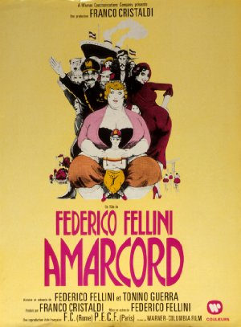
September 8, 2002Directed by Federico Fellini; Starring Pupella Maggio, Armando Brancia, Magali Noël, Ciccio Ingrassia
Amarcord
Italy, 1973, 123 min, Color, R, Italian w/subtitles
The Cinema, Inc. will kick off its 37th season with a screening of critically acclaimed Italian director Federico Fellini's visually striking 1973 fantasy-memoir about his boyhood growing up in fascist Italy in the seaside village of Rimini. In Amarcord (which is Italian for "I remember"), Fellini reminisces in his usual flamboyant surreal style about family, sex, religion and politics. "Fellini's own boyhood in prewar Italy had seen extremes," notes Kevin Hagopian of Penn State University. "In a single year, he had gone from the rigid, authoritarian absurdities of a boarding school … to lovely anarchic days ranging the Italian peninsula in a vaudeville troupe. Out of the vast space between fascism and freedom, Fellini fashioned a career as one of the cinema's great philosophers of the human spirit." Roger Ebert of the Chicago Sun-Times awards four stars (his highest rating) to this Oscar winner for Best Foreign-Language Film. "Federico Fellini's Amarcord takes us back to the small Italian town of his birth and young manhood," explains Ebert, "and gives us a joyful, bawdy, virtuoso portrait of the people he remembers there. He includes a character undoubtedly meant to be young Federico – earnest, awkward, yearning with all the poignancy of adolescent lust after the town beauties. But the movie's not an autobiography of a character. It's the story of the town itself."
Read Roger Ebert's review of Amarcord at Great Movies. -
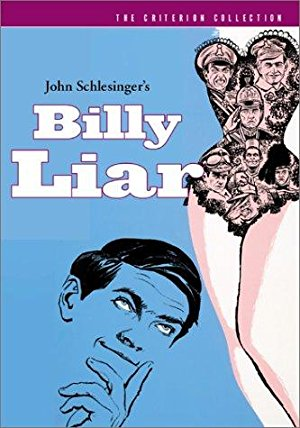
October 13, 2002Directed by John Schlesinger; Starring Tom Courtenay, Wilfred Pickles, Mona Washbourne, Ethel Griffies
Billy Liar
UK, 1963, 98 min, B&W, Not Rated
"One of the seminal British working-class films of the 1960s, Billy Liar is a first-rate comedy-fantasy that features Tom Courtenay in a role which Albert Finney had played in the stage version by [Keith] Waterhouse and [Willis] Hall," writes Cinebooks' Motion Picture Guide, which gives the film four stars (out of five). Cinebooks adds, "No one will argue the plot's derivation — James Thurber's classic short story "The Secret Life of Walter Mitty," with Courtenay as Billy Fisher, a dreamer who works for a funeral director, but who retreats into a fantasy world. Billy is also a pathological liar who, as Oscar Wilde once said, doesn't lie for gain, just for the sheer joy of lying. Billy is involved with three young women, two of whom share an engagement ring. [Julie] Christie, in one of her earliest roles, is terrific as an adventurous young woman willing to overlook anything the charming Billy tosses at her."
-
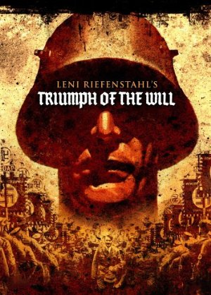
November 10, 2002Directed by Leni Riefenstahl; Starring Adolf Hitler, Max Amann, Martin Bormann, Walter Buch
Triumph of the Will (Triumph des Willens)
Germany, 1935, 55 min, B&W, Not Rated, German w/subtitles
"You might not become a Nazi after watching [Triumph of the Will]," writes Grant Balfour for Amazon.com, "but you will understand too clearly how Germany fell under Hitler's spell. The early crowd scenes remind one of nothing so much as Beatles concert footage (if only their fans were so well-behaved!). Like the fascists it monumentalizes, Triumph of the Will overlooks its own weaknesses — at nearly two hours, the speeches tend to drone on, and the repeated visual motifs are a little over-hypnotic, especially for modern viewers. But the occasional iconic vista (banners lining the streets of Nuremberg, Hitler parting a sea of 200,000 party members standing at attention) will electrify anyone into wakefulness." The Cinema, Inc. will screen a 55-minute version of this 110-minute landmark documentary, plus a related short subject.
Read Roger Ebert's review of Triumph of the Will at Great Movies. -
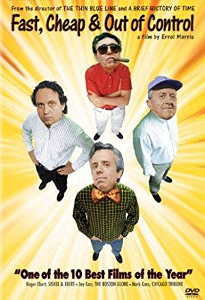
December 8, 2002Directed by Errol Morris; Starring Dave Hoover, George Mendonça, Raymond A. Mendez, Rodney Brooks
Fast, Cheap & Out of Control
USA, 1997, 80 min, Color/B&W, PG
"People say the darnedest things to filmmaker Errol Morris," writes Maitland McDonagh in Cinebooks' Motion Picture Guide, "as anyone who's seen his breathtaking true-crime documentary Thin Blue Line can attest. His new subjects are four slightly loopy eccentrics: MIT robot scientist Rodney Brooks; elderly topiary gardener George Mendonca; retired lion tamer Dave Hoover; and Ray Mendez, an authority on tiny naked mole rats, those hairless rodents that bear an uncanny resemblance to penises with teeth and legs. Morris intercuts their interviews and other footage to create a subtle, eerily profound meditation on man's relationship with the world around him." Janet Maslin of The New York Times adds, "[This film] intersperses … eerily poetic images with flashes of the humor and even absurdity that come with life in an offbeat profession. ("They can nail you before you say oops," says Hoover about life with lions.)"
-
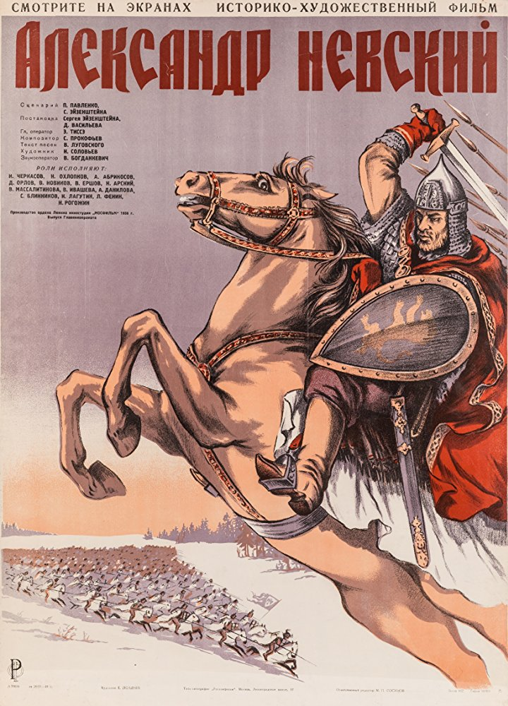
January 12, 2003Directed by Sergei M. Eisenstein, Dmitriy Vasilev; Starring Nikolay Cherkasov, Nikolai Okhlopkov, Andrei Abrikosov, Dmitriy Orlov
Alexander Nevsky (Aleksandr Nevskiy)
Soviet Union, 1938, 112 min, B&W, Not Rated, Russian w/subtitles
Set in 13th century Russia, director Sergei Eisenstein's magnificent nationalistic historical drama Alexander Nevsky vividly chronicles the transformation of the brilliant but moody and emotionally volatile title character (charismatically played by Nikolai Cherkassov) into a national hero. When fearsome Teutonic knights in grotesque armor and savage Tartars simultaneously invade Mother Russia, Prince Nevsky assembles an army of peasants and aristocrats to repel the invaders. With the Russian army at his beck and call, Eisenstein produced a masterpiece of Soviet (and world) cinema. This epic film, which Soviet dictator Josef Stalin vainly hoped would discourage Nazi dictator Adolf Hitler from invading the Motherland, climaxes with a ferocious 30-minute recreation of the decisive 1242 battle on a frozen lake. Leonard Maltin gives Alexander Nevsky four stars (his highest rating) and singles out for special praise the film's "[m]agnificently visualized battle sequences" and its wonderful score by renowned Russian composer Sergei Prokofiev.
-
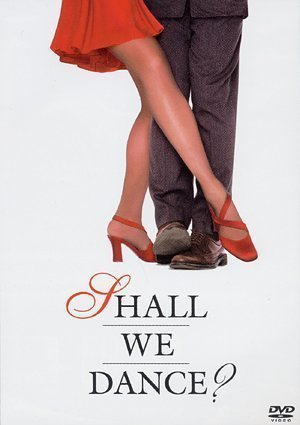
February 9, 2003Directed by Masayuki Suo; Starring Kôji Yakusho, Tamiyo Kusakari, Naoto Takenaka, Eri Watanabe
Shall We Dance? (Shall We Dansu?)
Japan, 1996, 136 min, Color, PG, Japanese w/subtitles
Leonard Maltin says Shall We Dance? is a "Beautifully realized film of a middle-aged businessman (Koji Yakusho), secretly yearning to break out of the rigid conformity of his daily life, who encounters the world of ballroom dance. Deliberately paced and laced with humor, with a game cast. Ballerina turned actress Tamiyo Kusakari matches Yakusho's fine performance." (Maltin gives the film 3½ stars.) An opening title for this superb romantic comedy notes: "In Japan, ballroom dancing is regarded with much suspicion." But as New York Times critic Janet Maslin acidly comments: "Japan may not recognize ballroom dancing, but if Masayuki Suo's film is any evidence, it knows about midlife crises set to music."
-
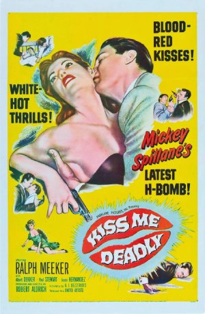
March 9, 2003Directed by Robert Aldrich; Starring Ralph Meeker, Albert Dekker, Paul Stewart, Juano Hernandez
Kiss Me Deadly
USA, 1955, 106 min, B&W, Not Rated
"More than once, [Kiss Me Deadly] has been called the best film noir ever made," writes Robert Weston in Film Monthly. "Certainly [it] was decades ahead of its time. … Based on Mickey Spillane's novel of the same title, Kiss Me Deadly follows the hard-fisted exploits of Mike Hammer, a character with the dubious distinction of being the harshest, least sympathetic of the seminal hard-boiled detectives. In the film version of Kiss Me Deadly, Hammer (Ralph Meeker) is searching for a mysterious box he knows nothing about, save for the fact that it contains something more valuable than anything he has ever chased in the past." Cinebooks' Motion Picture Guide gives the film five stars, calls it "Aldrich's greatest directorial effort," and adds, "Kiss Me Deadly is shot in an unforgettably harsh fashion, visually underlining the paranoia and existential funk of the film noir world view as few other films have done."
-
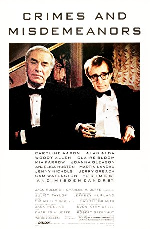
April 13, 2003Directed by Woody Allen; Starring Bill Bernstein, Martin Landau, Claire Bloom, Stephanie Roth Haberle
Crimes and Misdemeanors
USA, 1989, 104 min, Color/B&W, PG-13
"Woody Allen's Crimes and Misdemeanors is a thriller about the dark nights of the soul," claims Roger Ebert. "It shockingly answers the question most of us have asked ourselves from time to time: Could I live with the knowledge that I had murdered someone? Could I still get through the day and be close to my family and warm to my friends knowing that because of my own cruel selfishness, someone who had loved me was lying dead in the grave?" Leonard Maltin gives the film 3½ stars and calls it: "Arguably Woody [Allen]'s most ambitious film, playing heavy drama against often uproarious comedy, and certainly one of his most passionately debated; a one-of-a-kind effort that only he could pull off."
Read Roger Ebert's review of Crimes and Misdemeanors at Great Movies. -
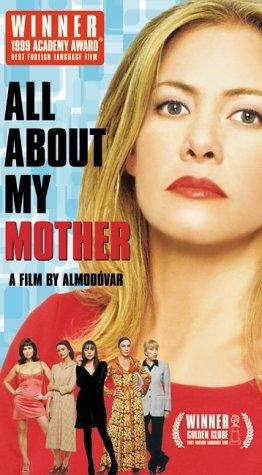
May 11, 2003Directed by Pedro Almodóvar; Starring Cecilia Roth, Marisa Paredes, Candela Peña, Antonia San Juan
All About My Mother (Todo sobre mi madre)
Spain/France, 1999, 101 min, Color, R, Spanish w/subtitles
"When Pedro Almodóvar gleefully established himself as 'Spain's most reputable disreputable young filmmaker' (in Vincent Canby's words), it was the dizzy hilarity of Women on the Verge of a Nervous Breakdown that marked him as an avatar of outrageous, sexy humor," writes Janet Maslin of The New York Times. She adds, "Starting at that place in Mr. Almodóvar's great big heart where womanhood, artifice, Tennessee Williams, Truman Capote and All About Eve collide, [this Oscar winner for Best Foreign-Language Film] weaves life and art into a rich tapestry of love, loss and compassion. This film's assorted females — real, theatrical or would-be — move past the nervous-breakdown stage and on to something much more forgiving."
-
June 8, 2003Directed by Abbas Kiarostami; Starring Homayoun Ershadi, Abdolrahman Bagheri, Afshin Khorshid Bakhtiari, Safar Ali Moradi
Taste of Cherry (Ta'm e guilass)
Iran/France, 1997, 95 min, Color, Not Rated, Persian w/subtitles
"A wealthy Iranian named Badii (Homayoun Ershadi) drives around in circles," writes Sandra Contreras of Cinebooks' Motion Picture Guide, "picking up several men and offering to pay them well for an easy job, but refusing to specify what he needs done. Of course, he arouses suspicion, but what he's looking for isn't sex — it's someone to bury him after he commits suicide. … Abbas Kiarostami's carefully paced film, which won the Palme d'Or at [the 1997] Cannes Film Festival, balances ennui with suspense in a narrative that's ultimately as heartbreaking as it is delicately simple." Stephen Holden of The New York Times adds, "[I]t isn't until Badii meets the taxidermist [Abdolhossein Bagheri] that the film finds a lyrical voice to match its powerful visual imagery. [Bagheri's] gorgeous, rough-hewn soliloquy about regaining his zest for life after trying to hang himself from a mulberry tree is a simple, eloquent parable of the senses opening to the refreshment of life's simple pleasures."
-
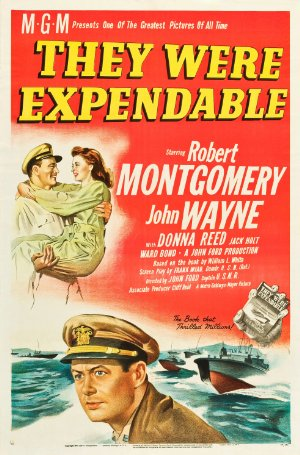
July 13, 2003Directed by John Ford, Robert Montgomery; Starring Robert Montgomery, John Wayne, Donna Reed, Jack Holt
They Were Expendable
USA, 1945, 135 min, B&W, Not Rated
Leonard Maltin calls this four-star film "One of the finest (and most underrated) of all WWII films, based on the true story of America's PT boat squadron in the Philippines during the early days of the war." Richard T. Jameson of Amazon.com agrees, "[It] is a heartbreakingly beautiful film, full of astonishing images of warfare, grief, courage, and dignity: the artificial 'rainfall' that lashes the beached [John] Wayne as his PT boat explodes in the surf; the glow around a communally improvised dinner for nurse [Donna] Reed; an old ship-repairer [Russell Simpson] settling in grimly to wait for the Japanese, with 'Red River Valley' as benediction; the propeller spray that hangs over a jungle inlet, like the dust from one of Ford's cavalry pictures, as the PTs round a bend and disappear into history. This is a masterpiece."
-
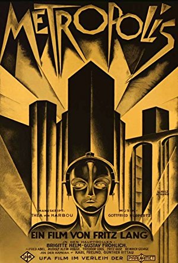
August 10, 2003Directed by Fritz Lang; Starring Alfred Abel, Gustav Fröhlich, Rudolf Klein-Rogge, Fritz Rasp
Metropolis
Germany, 1927, 153 min, B&W, Not Rated, Silent w/intertitles
"Fritz Lang's 1927 film Metropolis is one of the great achievements in the silent era, a work so audacious in its vision and so angry in its message that it is, if anything, more powerful today than when it was made," declares Roger Ebert, who gives Metropolis four stars. Ebert adds, "Lang's movie is one of the great overwrought fantasies of German Expressionism, a story of a monstrous twenty-first-century city in which the workers labor like robots in their subterranean factories, while the privileged classes dance the night away, far above."
Read Roger Ebert's review of Metropolis at Great Movies.